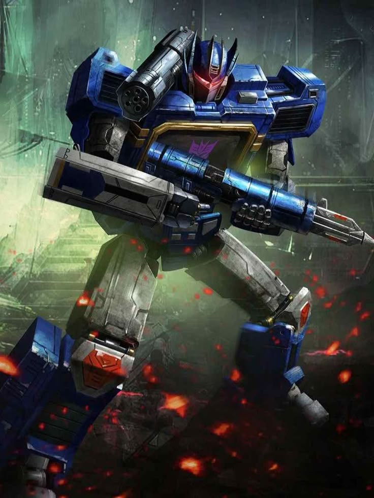

ARCHIVE #007
SOUNDWAVE
DECEPTICONScientifique • Espion

MODE ALTERNATIF

MODE ROBOT
IDENTITÉ
ARMEMENT
- Mini-cassettes
- Canon Mitrailleur
- Canon Sonique d'épaule
- Blaster à Concussion
PERSONNALITÉ
Soundwave est reconnaissable sa voix robotique. Dans la première série, le mode alternatif de Soundwave était une radio-cassette mais dans les versions plus modernes il opte pour des mode plus conventionnels comme un jet cybertronien, un drône aérien ou des véhicules tout-terrains. Soundwave est l'un des soldats les plus fidèles de Megatron, avec Shockwave, cherchant rarement à le renverser. C'est également un tacticien qui se bat peu, envoyant généralement ses cassettes se battre à sa place, mais est loin d'être faible. Sa personnalité et son histoire peuvent cependant varier selon les continuités.
RELATIONS
Allié et Leader des Decepticons
Ennemi et Leader des Autobots
Second de Megatron et Chef des Seekers
Scientifique froid mais efficace
Les mini-cassettes sont les alliés les plus emblématiques de Soundwave, il y a: Laserbeak, Ravage, Rumble, Frenzy, Buzzsaw et Ratbat
APPARITIONS
Première apparition dans la génération G1 (série et comics Marvel).
The Transformers: The Movie
Transformers: Animutant / Beast Wars
Transformers: Robot in Disguise
Transformers: Trilogie d'Unicron (Armada, Energon et Cybertron)
Comics IDW
Transformers: Animated
Transformers: Revenge of the Fallen, film live-action. (Dans le film suivant de 2011 où il est nettement plus présent)
Série de comics Shattered Glass
Transformers:Prime
Jeux Transformers: Trilogie de Cybertron (War For Cybertron, Fall Of Cybertron et Rise of the Dark Spark)
Transformers: Robot in Disguised (2015)
Transformers: Cyberverse
Transformers: Trilogie de Cybertron (Siege, Earthrise et Kingdom)
Transformers: EarthSpark
Comics Skybound
Transformers: One
Transformers: Cyberworld
MULTIVERS
Version originale de la franchise.
Plusieurs versions dans les différentes continuités IDW.
Version des films live-action.
Version alternative où les rôles des factions sont inversés.